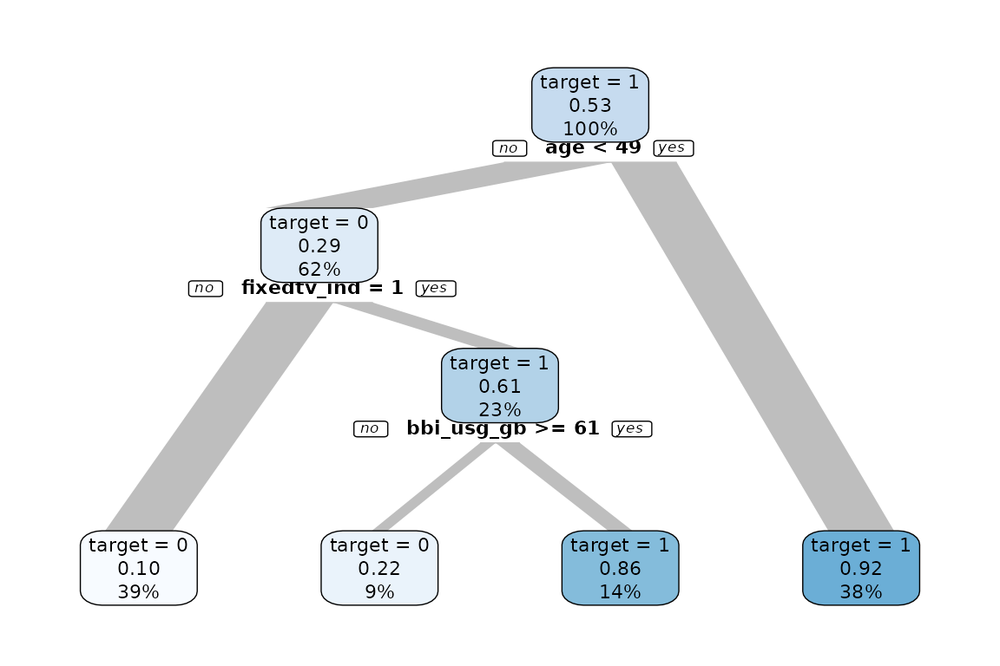
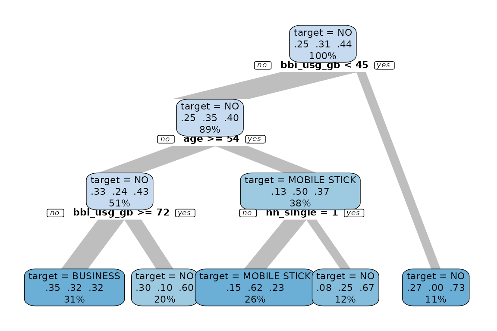
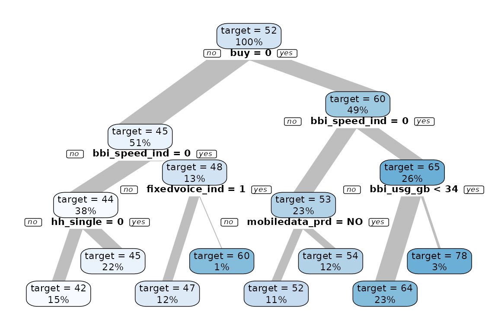
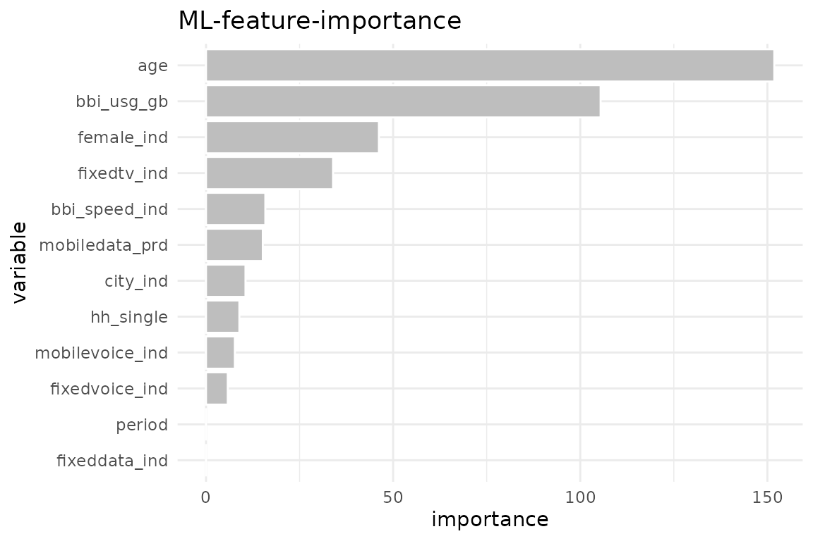
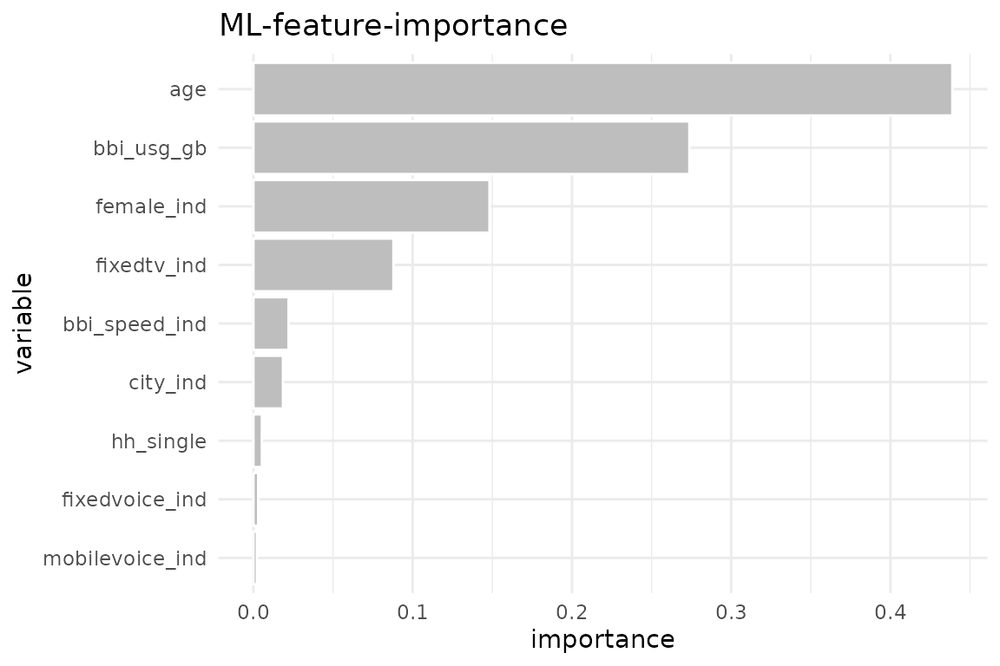
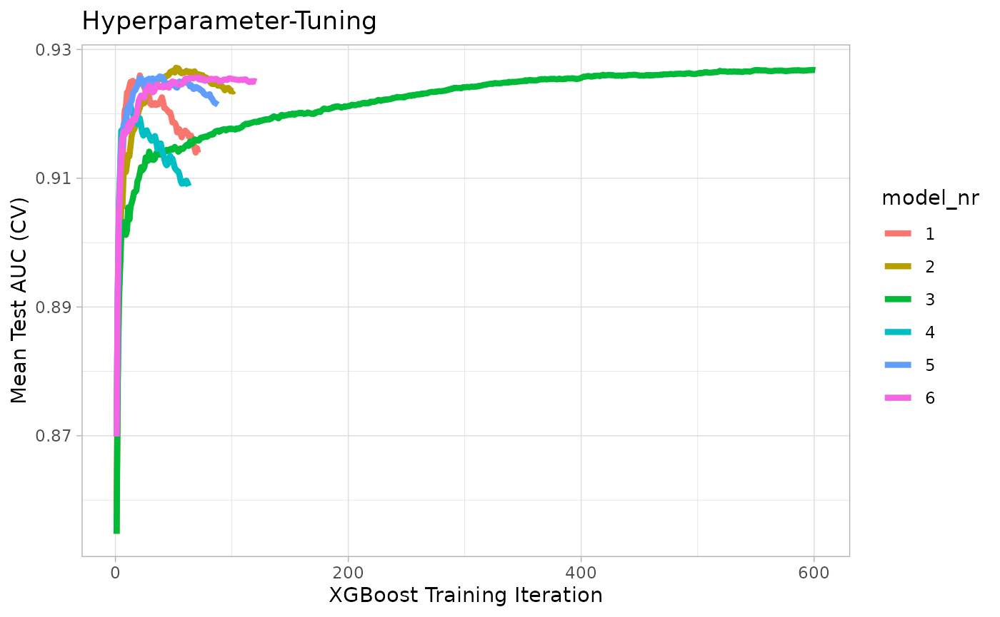
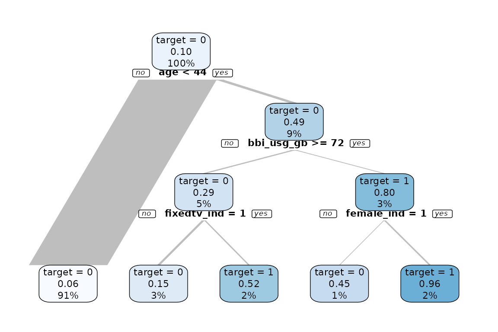

The explore package offers a simplified way to use machine learning to understand and explain patterns in the data.
-
explain_tree()creates a decision tree. The target can be binary, categorical or numerical -
explain_forest()creates a random forest. The target can be binary, categorical or numerical -
explain_xgboost()creates a random forest. The target must be binary (0/1, FALSE/TRUE) -
explain_logreg()creates a logistic regression. The target must be binary -
balance_target()to balance a target -
weight_target()to create weights for the decision tree
We use synthetic data in this example
library(dplyr)
library(explore)
data <- create_data_buy(obs = 1000)
glimpse(data)
#> Rows: 1,000
#> Columns: 13
#> $ period <int> 202012, 202012, 202012, 202012, 202012, 202012, 202012…
#> $ buy <int> 1, 0, 1, 0, 0, 1, 0, 0, 0, 1, 0, 1, 0, 0, 1, 0, 1, 1, …
#> $ age <int> 39, 57, 55, 66, 71, 44, 64, 51, 70, 44, 58, 47, 68, 71…
#> $ city_ind <int> 1, 0, 0, 0, 0, 1, 0, 1, 1, 1, 0, 0, 1, 1, 0, 1, 1, 1, …
#> $ female_ind <int> 0, 0, 1, 0, 1, 0, 0, 0, 0, 1, 1, 0, 0, 0, 1, 0, 1, 0, …
#> $ fixedvoice_ind <int> 0, 0, 0, 0, 0, 0, 0, 0, 0, 0, 0, 0, 0, 1, 0, 0, 0, 0, …
#> $ fixeddata_ind <int> 1, 1, 1, 1, 1, 1, 1, 1, 1, 1, 1, 1, 1, 1, 1, 1, 1, 1, …
#> $ fixedtv_ind <int> 1, 0, 1, 1, 0, 1, 0, 1, 0, 1, 0, 1, 0, 0, 1, 1, 1, 0, …
#> $ mobilevoice_ind <int> 0, 1, 1, 0, 0, 1, 0, 1, 1, 1, 0, 1, 0, 1, 1, 1, 0, 0, …
#> $ mobiledata_prd <chr> "NO", "NO", "MOBILE STICK", "NO", "BUSINESS", "BUSINES…
#> $ bbi_speed_ind <int> 1, 1, 0, 1, 0, 1, 0, 1, 0, 1, 1, 1, 0, 0, 1, 0, 0, 1, …
#> $ bbi_usg_gb <int> 77, 49, 53, 44, 55, 93, 50, 64, 63, 87, 45, 45, 70, 79…
#> $ hh_single <int> 0, 0, 0, 0, 0, 0, 0, 1, 1, 1, 0, 0, 1, 0, 0, 0, 0, 1, …Explain / Model
Decision Tree
data %>% explain_tree(target = buy)
data %>% explain_tree(target = mobiledata_prd)
data %>% explain_tree(target = age)
Random Forest
data %>% explain_forest(target = buy, ntree = 100)
To get the model itself as output you can use the parameter
out = "model or out = all to get all (feature
importance as plot and table, trained model). To use the model for a
prediction, you can use predict_target()
XGBoost
As XGBoost only accepts numeric variables, we use
drop_var_not_numeric() to drop mobile_data_prd
as it is not a numeric variable. An alternative would be to convert the
non numeric variables into numeric.
data %>%
drop_var_not_numeric() |>
explain_xgboost(target = buy)
Use parameter out = "all" to get more details about the
training
train <- data %>%
drop_var_not_numeric() |>
explain_xgboost(target = buy, out = "all")
train$importance
#> variable gain cover frequency importance
#> <char> <num> <num> <num> <num>
#> 1: age 0.438876299 0.269718075 0.22916667 0.438876299
#> 2: bbi_usg_gb 0.273748159 0.309418667 0.31250000 0.273748159
#> 3: female_ind 0.148257511 0.145936389 0.13095238 0.148257511
#> 4: fixedtv_ind 0.087929677 0.126867898 0.12500000 0.087929677
#> 5: bbi_speed_ind 0.022082803 0.057552002 0.07440476 0.022082803
#> 6: city_ind 0.018582321 0.064343469 0.06845238 0.018582321
#> 7: hh_single 0.005310378 0.010887744 0.02083333 0.005310378
#> 8: fixedvoice_ind 0.003014397 0.008814722 0.02083333 0.003014397
#> 9: mobilevoice_ind 0.002198457 0.006461034 0.01785714 0.002198457
train$tune_plot
train$tune_data
#> model_nr eta max_depth runtime iter train_auc_mean test_auc_mean
#> <int> <num> <num> <difftime> <num> <num> <num>
#> 1: 1 0.30 3 0 mins 21 0.9599662 0.9259773
#> 2: 2 0.10 3 0 mins 52 0.9572578 0.9271735
#> 3: 3 0.01 3 0 mins 551 0.9592901 0.9268295
#> 4: 4 0.30 5 0 mins 13 0.9762086 0.9212647
#> 5: 5 0.10 5 0 mins 38 0.9773647 0.9258133
#> 6: 6 0.01 5 0 mins 71 0.9601223 0.9256453To use the model for a prediction, you can use
predict_target()
Logistic Regression
data %>% explain_logreg(target = buy)
#> # A tibble: 6 × 5
#> term estimate std.error statistic p.value
#> <chr> <dbl> <dbl> <dbl> <dbl>
#> 1 (Intercept) 5.87 0.544 10.8 3.88e-27
#> 2 age -0.146 0.0106 -13.8 3.49e-43
#> 3 city_ind 0.711 0.183 3.89 1.02e- 4
#> 4 female_ind 1.75 0.186 9.38 6.91e-21
#> 5 fixedtv_ind 1.51 0.190 7.93 2.14e-15
#> 6 bbi_usg_gb -0.0000724 0.0000904 -0.801 4.23e- 1Balance Target
If you have a data set with a very unbalanced target (in this case
only 5% of all observations have buy == 1) it may be
difficult to create a decision tree.
data <- create_data_buy(obs = 2000, target1_prob = 0.05)
data %>% describe(buy)
#> variable = buy
#> type = integer
#> na = 0 of 2 000 (0%)
#> unique = 2
#> 0 = 1 899 (95%)
#> 1 = 101 (5.1%)It may help to balance the target before growing the decision tree
(or use weighs as alternative). In this example we down sample the data
so buy has 10% of target == 1.
data %>%
balance_target(target = buy, min_prop = 0.10) %>%
explain_tree(target = buy)